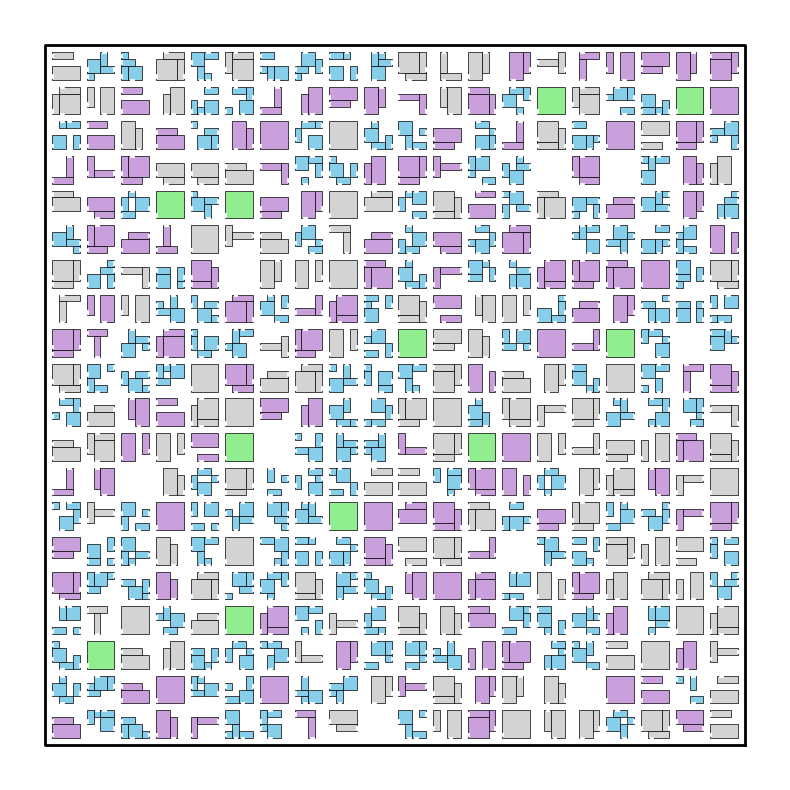
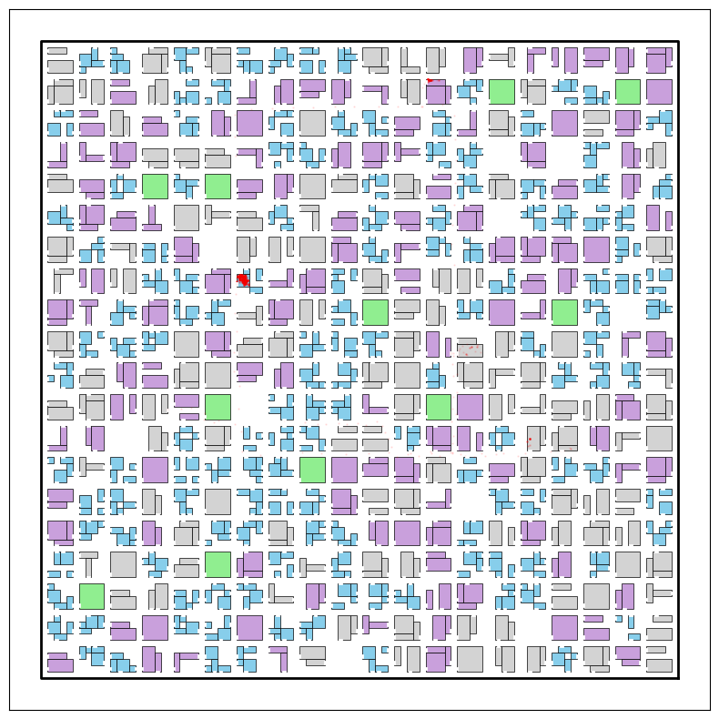

Install the nomad package from GitHub
[1]:
%load_ext autoreload
%autoreload 2
[2]:
from datetime import datetime, timedelta
import matplotlib.pyplot as plt
import pandas as pd
import numpy as np
import numpy.random as npr
import random
from shapely.geometry import box
from pprint import pprint
import nomad.city_gen as cg
from nomad.city_gen import City, Street, RandomCityGenerator
import nomad.traj_gen as tg
from nomad.traj_gen import Agent, Population
import nomad.stop_detection as sd
from nomad.constants import DEFAULT_SPEEDS, FAST_SPEEDS, SLOW_SPEEDS, DEFAULT_STILL_PROBS
from nomad.constants import FAST_STILL_PROBS, SLOW_STILL_PROBS, ALLOWED_BUILDINGS
import os
Create City
[3]:
city_generator = RandomCityGenerator(width=101,
height=101,
street_spacing=5,
park_ratio=0.05,
home_ratio=0.4,
work_ratio=0.3,
retail_ratio=0.25,
seed=100)
clustered_city = city_generator.generate_city()
clustered_city.compute_gravity()
C:\Users\pacob\Desktop\Brain\Code Development\nomad\nomad\city_gen.py:694: UserWarning: Hub network not available. Initializing with 6 hubs.
warnings.warn(f"Hub network not available. Initializing with {hub_size} hubs.")
[4]:
%matplotlib inline
fig, ax = plt.subplots(figsize=(10, 10))
plt.box(on=False)
clustered_city.plot_city(ax, doors=True, address=False)
# remove axis labels and ticks
ax.set_yticklabels([])
ax.set_xticklabels([])
ax.set_xticks([])
ax.set_yticks([])
plt.show()
plt.savefig("random-city.png")

<Figure size 640x480 with 0 Axes>
[7]:
population = Population(clustered_city)
population.generate_agents(N=1, seed=100, datetimes=pd.Timestamp("2025-01-01 00:00", tz="America/New_York"))
for i, agent_id in enumerate(population.roster):
agent = population.roster[agent_id]
agent.generate_trajectory(end_time=pd.Timestamp("2025-01-02 00:59", tz="America/New_York"),
seed=100+i)
agent.sample_trajectory(
beta_start=300,
beta_durations=60,
beta_ping=10,
seed=100+i)
sampled_traj = agent.sparse_traj
[8]:
# Visualization
sample_user = population.roster['nifty_saha']
fig, ax = plt.subplots(figsize=(10, 10))
clustered_city.plot_city(ax, doors=True, address=False, zorder=1)
ax.set_yticklabels([])
ax.set_xticklabels([])
ax.set_xticks([])
ax.set_yticks([])
ax.scatter(x=sample_user.trajectory.x,
y=sample_user.trajectory.y,
s=0.5, color='red', alpha=0.1)
plt.savefig("random-city-one-user.png")
